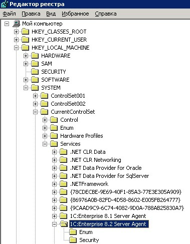
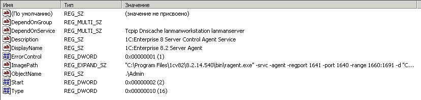
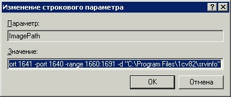

Информация устарела!!!! Использовать - Обновление платформы. Совместное использование 8.1 и 8.2 на одном сервере
Разведение портов для совместной работы серверов 1С:Предпиятия 8.1 и 8.2
"C:\Program Files\1cv82\8.2.14.540\bin\ragent.exe" -srvc -agent -regport 1641 -port 1640 -range 1660:1691 -d "C:\Program Files\1cv82\srvinfo"
В случае авт. установки сначала удалить потом уст. заново.
Предисловие:
Остановить сервера 1С (в частности 8.1), поставить платформу 8.2(\\Servsh\Shared\АСУ\Платформы 1С\УПП 1.3\Технологическая платформа 8.2 Версия 8.2.14.537).
1) Запустить Реестр: Меню «Пуск» à «Выполнить» à набрать «regedit» далее раскрыть путь к агенту сервера 1С:Предприятия 8.2 à



1) Выбрать раздел «ImagePath», зайти в него(двойной щелчок, открыть), заменить во всех числовых комбинациях цифру «5» на цифру «6».
Пример:
Была строка: "C:\Program Files\1cv82\8.2.14.537\bin\ragent.exe" -srvc -agent -regport 1541 -port 1540 -range 1560:1591 -d "C:\Program Files\1cv82\srvinfo"
Вышеуказанная строка сформируется по умолчанию при установке платформы 8.2.
После замены: "C:\Program Files\1cv82\8.2.14.537\bin\ragent.exe" -srvc -agent -regport 1641 -port 1640 -range 1660:1691 -d "C:\Program Files\1cv82\srvinfo"
P.S.: Запустить сервера поочерёдно, проверить в процессах появление процессов rphost, rmngr, ragent.